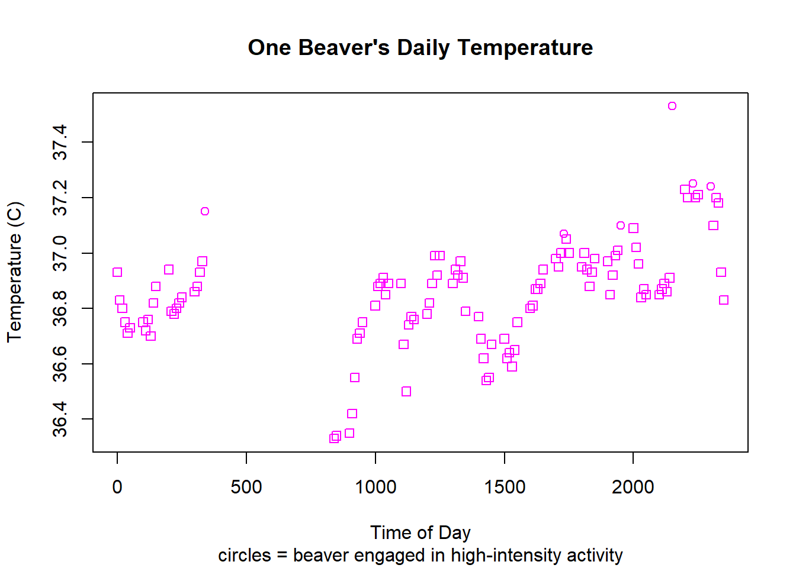

Functions
Install packages
install.packages("here")Load libraries & data
Quick aside on the genius of the here package:
Whether they're collaborating with colleagues, uploading to data repositories after submitting a paper, or uploading scripts to Github for anyone to use, people who write code constantly share their code. A great time-saving strategy for streamlining code-sharing is to use here, a package intended to facilitate file referencing by getting rid of absolute filepaths (which makes your code fragile and difficult to integrate into other people's systems) and instead using relative filepaths (which makes your code easier to transfer to other people's systems). See Jenny Bryan's overview of the package for more information and convincing arguments for adopting here.
Load libraries
library(here) # Look where your folder begins.Make two dataframes from built-in dataset, "Body Temperature Series of Two Beavers"
beaver_1 <- beaver1
beaver_2 <- beaver2Functions: The Basics
What is a function?
A function is a command that executes one to several tasks all at once. You've probably used functions before. In R, for example, we frequently use functions that have been made by other people: read.csv() and print() are functions, to name a few.
When should we make our own functions?
In a 2016 interview with Naturally Speaking, Hadley Wickham explains,
"A really good rule of thumb is, as soon as you've copied and pasted something more than twice, it's time to start thinking, 'how can I get rid of that duplication?'"
So if you think it wise to take the advice of RStudio's widely regarded Chief Scientist (which I certainly do!), then you should consider making your own functions when you find yourself copying and pasting something 3 or more times.
There will always be times to break this rule, but here's Hadley again on why it's important to learn how to write your own functions:
"Any time you've got duplication in your code, there's just a chance for... bugs to come in because... you change one, and you forget to change another one, you get inconsistencies. It's really frustrating."
Exercises
Goal 1: Make a function that exports a dataframe to csv
How to set up a function
When you set up a function, the first two things you want to think about are 1) what you will name your function and 2) the variables the function will need in order to produce an output.
In the function below, the name is add_numbers and the input variables are called number_1, number_2, and number_3. Big surprise: it adds three numbers together!
After adding your function name and variables as in the format below (you can have lots of input variables, more than the three we're using), add a set of curly brackets. Inside the curly brackets ({}), write the chunk of code that you want your function to execute (the body). The body should reference your input variables. It should also be indented, which R will automatically do once you press "Enter" after typing the curly brackets.
add_numbers <- function(number_1, number_2, number_3) {
number_1 + number_2 + number_3
}add_numbers(1,10,100)## [1] 111Take a look at how we've applied the same structuring logic to set up this function as well. This function is performing the write.csv() function on an object referenced as "dataframe". It will export the object to a file referenced as "filename".
I've explicitly told R that the write.csv function should use its "x" argument on what I've called "dataframe", and "file" on "filename".
Beaver_to_csv1.1 <- function(dataframe, filename) {
write.csv(x = dataframe,
file = filename)
}Example 1: Export beaver csv with only filename in path
Create object that we'll use as our filename
Notice we've added the file type (extension) to the filename: .csv
filename1.1 <- "Beaver1.csv" Use function to export dataframe object to csv
Beaver_to_csv1.1(beaver_1,
filename1.1)Example 2: Export beaver csv with only filename in path
Make a folder especially for beaver file exports
Find where your project folder begins (its root):
here::here()Then manually create a new folder in that directory called "exports".
Create new input variables for new function
Make new path:
path1.2 <- here::here("./exports/ ") I'm not sure how to export without a space in the filepath, so I'm adding a space to the right side of the last /. We'll get rid of it later.
Make new file name and file type. This time we'll separate the file name from the file type so that we can change up the file type by indicating it as an input variable.
filename1.2 <- "Beaver1"
filetype1.2 <- ".csv"Make function that exports dataframe object to csv in csvs folder
To accommodate the file path and file type objects, we'll add a two more input variables to our new function's set of input variables.
Beaver_to_csv1.2 <- function(dataframe, path, filename, filetype) {
write.csv(dataframe,
gsub(" ", "",
paste0(path,
filename,
filetype)))
}Here's what the function is doing:
- First, look to the most indented portion of the code, which starts with
paste0. Thepaste0()function is taking three input variables and pasting them together: path, filename, and filetype. - Next, look to the function encompassing that code: the
gsub()function. This function is finding any spaces and substituting them with nothing (essentially removing any spaces it finds, particularly the space we had to put in the path). - Finally, the outermost shell is the
write.csv()function, which is taking our dataframe as the object to be exported, and will name and export this object where the conglomerate path + filename + filetype tells it to.
Try out the function with a few examples
Export dataframe to csv in csvs folder:
Beaver_to_csv1.2(beaver_1, path1.2, filename1.2, filetype1.2)Just for fun, add .txt as a file type option:
Beaver_to_csv1.2(beaver_1, path1.2, filename1.2, ".txt")We could skip the step of saving the function's input variables to individual objects and just input it all on the fly, as shown here:
Beaver_to_csv1.2(dataframe = beaver_1,
path = here::here("./exports/ "),
filename = "Beaver1",
filetype = ".txt")You don't need the "x =" portion either but feel free to keep it if it helps you clarify your code.
Beaver_to_csv1.2(beaver_1,
here::here("./exports/ "),
"Beaver1",
".csv")Goal 2: Make a function that exports a list of dataframes to separate csvs
Make list of beaver dataframes
Beavers <- list(beaver_1, beaver_2)Create function
Export_beaver_list <- function(df_list, path, filetype) {
for (i in 1:length(df_list)){
Beaver_to_csv1.2(df_list[i], path, paste0("Beaver", i), filetype)
}
}Run function
Export_beaver_list(Beavers,
here::here("./exports/ "),
".csv")Goal 3: Make, export plots for multiple dataframes
Create a function that uses a dataframe as input, then exports a plot
Create a regular plot
plot(beaver_1$temp ~ beaver_1$time,
xlim = c(0, 2400),
ylim = c(36, 38),
xlab = "Time of Day",
ylab = "Beaver Temperature (C)",
col = "dark green",
pch = 2,
cex = .5)
Make the plot more easily reproducible
One way to do so is to name relative (vs. absolute) axis limits. This plot will begin its x axis, which is plotting time, 0.5 units before the datapoint with the lowest time value. It will extend the x axis 0.5 units after the datapoint with the highest time unit. The same is true for the y axis' limits for temperature.
plot(temp ~ time,
data = beaver_1,
xlim = c(min(time),
max(time)),
ylim = c(min(temp) - 0.5,
max(temp) + 0.5),
xlab = "Time of Day",
ylab = "Beaver Temperature (C)",
col = "dark green",
pch = 2, # point shape
cex = .5) # point size
Create function
Beaver_to_plot <- function(dataframe, path, filename, filetype) {
png(file = gsub(" ", "",
paste0(path, filename, filetype)))
plot(temp ~ time,
data = dataframe,
xlim = c(min(time),
max(time)),
ylim = c(min(temp) - 0.5,
max(temp) + 0.5),
xlab = "Time of Day",
ylab = "Beaver Temperature (C)",
col = "dark green",
pch = 2, # point shape
cex = .5) # point size
dev.off() # tells R to stop plotting
}Run function
Beaver_to_plot(beaver_1,
here::here("./exports/ "),
"Beaver1.1",
".png")## png
## 2Scale up: Create a function that uses a list of dataframes as input, then exports multiple plots
Create function
Beaver_to_plot_many <- function(df_list, path, filetype) {
for (i in 1:length(df_list)){
Beaver_to_plot(df_list[[i]],
path,
paste0("Beaver", i, "_plot2"),
filetype)
}
}Run function
Beaver_to_plot_many(Beavers,
here::here("./exports/ "),
".png")Extra credit
Ellipsis
You don't always need to specify all of the input variables for a function. Sometimes you can make use of a tool called an ellipsis. An ellipsis is, you guessed it, three dots in a row: "...".
The most straightforward usage of an ellipsis is for when you want to make your function flexible enough to handle an unspecified number of input variables. For instance, think about the paste() function.
The paste() function can print any number of input variables:
paste("This", "phrase", "has", "five", "variables")## [1] "This phrase has five variables"paste("How", "about", "three?")## [1] "How about three?"paste("I", "could", "go", "on", "and", "on", "and", "on", "and", "on", "and", "on...")## [1] "I could go on and on and on and on and on..."Example function with an ellipsis
Create function
ellipsis_example <- function(x_var, y_var, ...){
plot(y_var ~ x_var,
...)
}Run function
ellipsis_example(x_var = beaver_1$time,
y_var = beaver_1$temp,
pch = beaver_1$activ,
col = "magenta",
main = "One Beaver's Daily Temperature",
sub = "circles = beaver engaged in high-intensity activity",
xlab = "Time of Day",
ylab = "Temperature (C)")
Extra exercises
For those interested, here are some additional exercises crafted by Reto Stauffer, Joanna Chimiak-Opoka, Luis Miguel Rodríguez-R, Thorsten Simon, and Achim Zeileis from their resource, "Introduction to Programming with R".